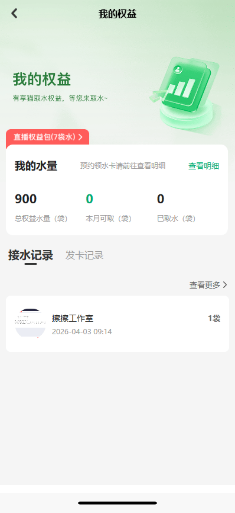
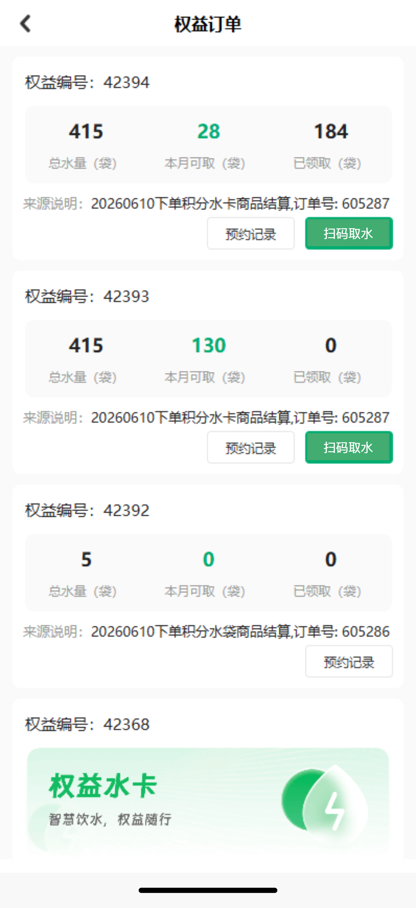
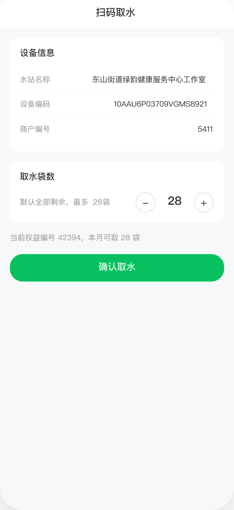
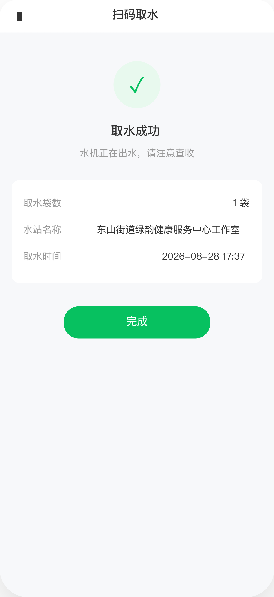
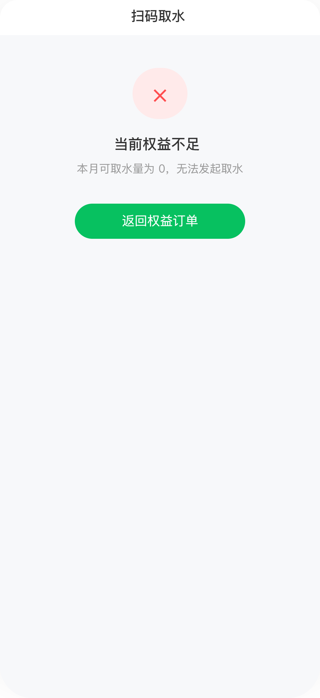
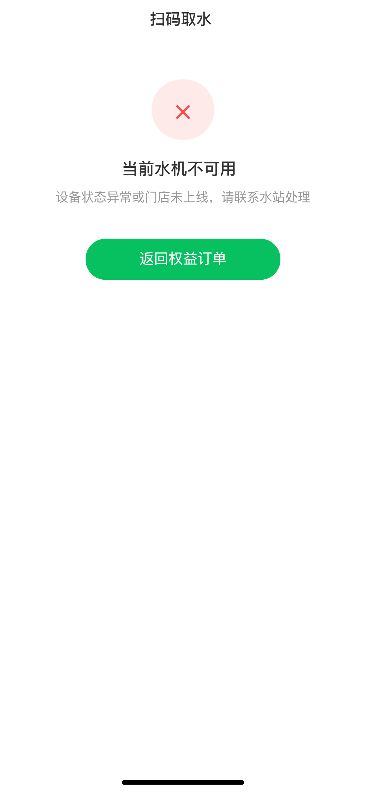
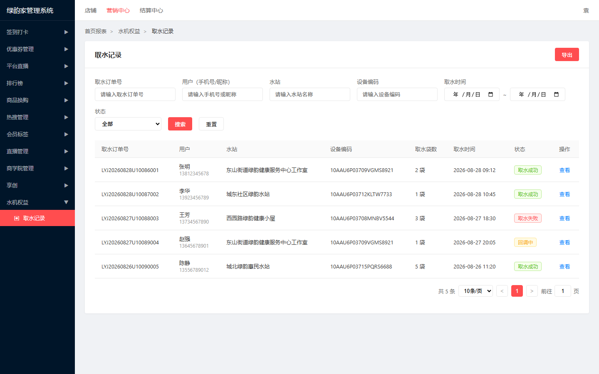
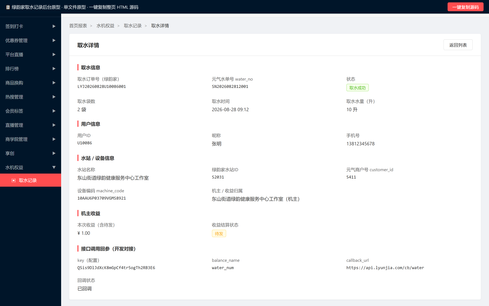

绿韵家扫码取水功能 PRD
一、文档基本信息
| 项目 | 内容 |
|---|
| 项目名称 | 绿韵家扫码取水功能 |
| 创建时间 | 2026-08-28 |
| 负责人（PM） | 袁中天 |
| 技术 Owner | ⚠️ 待确认 @研发负责人 |
| 测试负责人 | ⚠️ 待确认 @测试负责人 |
| 文档状态 | 评审中 |
历史修订记录
| 版本 | 日期 | 修改人 | 修订内容简述 | 状态 |
|---|
| V1.0 | 2026-08-28 | 袁中天 | 初版；基于最终 C 端原型截图与后台原型定稿，输出扫码取水完整流程与后台取水记录管理 | 评审中 |
二、项目背景与目标
2.1 业务背景
绿韵家现有取水流程中，用户领取/购买水袋权益后，需要经过「元气先锋」中间层完成水袋划拨与水机通讯。实际运营中存在以下痛点：
- 链路依赖元气先锋，偶发通讯失败导致用户到店无法取水；
- 绿韵家侧无法直接感知水机状态，异常排查滞后；
- 缺乏统一的取水记录与机主收益数据沉淀，月末结算需人工核对。
本期需求将「元气先锋」中间层剥离：绿韵家后台直接与水机通讯，用户到店扫码后由绿韵家后台校验权益并调用取水接口出水，同时沉淀取水记录与机主待发收益。
2.2 项目目标
- 业务目标：缩短取水链路，提升取水成功率；建立可查询、可对账的取水订单记录与机主收益记录。
- 用户目标：用户到达水机前，使用绿韵家 App/小程序扫码即可取水，实时看到取水成功或异常提示。
2.3 衡量指标（KPI）
| 指标 | 目标值 | 说明 |
|---|
| 扫码取水成功率 | ⚠️ 待确认 @产品负责人 | 取水接口返回成功 / 总扫码取水请求数 |
| 平均取水完成时长 | ⚠️ 待确认 @产品负责人 | 从用户点击「确认取水」到收到成功响应的时长 |
| 设备异常投诉率 | ⚠️ 待确认 @产品负责人 | 因设备/门店异常导致的取水失败投诉 / 总取水请求 |
三、业务流程与架构
3.1 本期范围与影响
| 端口/模块 | 本期范围 | 对老数据影响 |
|---|
| C 端 App / 小程序 / H5 | 我的权益、权益订单、扫码取水确认页、取水成功页、权益不足页、设备异常页 | 历史水袋权益数据沿用；新增取水记录关联 |
| 绿韵家管理后台 | 水机权益 → 取水记录（列表页、详情页） | 新增取水记录表、机主收益表 |
| 元气先锋接口 | 仅调用三代机取水接口，不含划拨/预约 | 无 |
| 商家端后台 | 本需求不涉及商家端后台 | （初始） |
| 四代机 / 新一代水机 | 本需求暂不涉及，仅对接三代机 | （初始） |
3.2 业务流程图
📎 权威来源：本流程与 2026-08-28 需求梳理阶段《绿韵家取水流程梳理-流程图 (2)》一致，核心链路为「发放水袋 → 用户扫水机码 → 解析商户/设备 → 校验水袋权益 → 调用取水接口出水 → 记录取水记录 + 机主待发收益」。⚠️ 禁止在 PRD 中自行简化/重绘/修改流程图。
图 3-1：绿韵家扫码取水横向泳道流程图
3.3 信息架构
| 层级 | 说明 | 关键数据/能力 |
|---|
| C 端展示层 | 我的 → 我的权益 / 网格水站 → 权益订单 → 扫码取水 → 结果页 | 权益编号、本月可取、设备编码、取水袋数 |
| 后台配置/管理 | 绿韵家管理后台 → 水机权益 → 取水记录（列表/详情） | 取水订单查询、导出、详情查看 |
| 业务服务层 | 权益校验服务、订单服务、取水接口代理、回调处理服务 | 生成订单号、调用元气三代机接口、处理异步回调 |
| 数据层 | 用户水袋权益表、取水记录表、机主收益表、水站映射表、设备表 | 记录用户、水站、设备、袋数、时间、状态 |
| 第三方接口 | 元气先锋三代机取水接口 | 出水指令下发、回调通知 |
3.4 状态机与状态流转
3.4.1 取水记录状态
完整状态枚举：回调中、取水成功、取水失败。其中「回调中」为中间态，等待同步响应或异步回调后流转为终态。
| 起始状态 | 触发动作（Action） | 前置条件 | 目标状态 | 后置条件/结果 |
|---|
| （初始） | 用户确认取水 | 本月可取 > 0；设备/门店可用 | 回调中 | 生成绿韵家订单号，调取水接口，扣减权益 |
| 回调中 | 收到取水接口同步成功响应 | 接口返回 errcode=0 | 取水成功 | 记录 water_no；机主收益记为「待发」 |
| 回调中 | 收到取水接口同步失败响应 | 接口返回 errcode≠0 | 取水失败 | 恢复用户权益（撤销扣减）；不计入机主收益 |
| 回调中 | 异步回调通知 | callback_url 收到最终状态 | 取水成功 / 取水失败 | 以回调状态为准修正最终状态 |
3.4.2 机主收益状态
完整状态枚举：待发、已结算、作废。仅在取水记录状态 = 取水成功时生成「待发」收益；结算条件本期沿用现有规则。
| 起始状态 | 触发动作（Action） | 前置条件 | 目标状态 | 后置条件/结果 |
|---|
| （初始） | 取水成功 | 取水记录状态 = 取水成功 | 待发 | 收益金额 = 取水袋数 × 0.5 元 |
| 待发 | 月末统一结算 | 满足现有结算条件（本期沿用，不改动） | 已结算 | 按结算规则发放给机主 |
| 待发 | 发生退单/作废 | 取水记录被判定无效 | 作废 | 不计入结算 |
四、功能需求详情
4.1 C 端
4.1.1 我的 已有-沿用
沿用现有功能。
4.1.2 我的权益 本期改动
需求影响范围：用户查看自身水袋权益与取水记录的入口；本期改动点为数据口径与交互入口对齐新的扫码取水链路。涉及终端：C 端 App / 小程序 / H5。
4.1.2.1 页面原型与交互示意

图 4-1：C 端「我的权益」页
交互说明：
- 页面顶部展示权益主题图与总览文案；
- 「直播权益包(7袋水) >」点击后进入权益包详情（本期仅保留入口，详情页不在本次范围）；
- 「我的水量」区展示总权益水量、本月可取、已取水三指标；
- Tab 切换「接水记录 / 发卡记录」，默认「接水记录」；
- 「查看更多 >」进入权益订单列表。
4.1.2.2 详细逻辑规则
界面与展示规则
- 总权益水量：用户当前持有的全部可用水袋数量（袋）。
- 本月可取：当前自然月内还可取水袋数量；若权益包有月度上限，按自然月重置。
- 已取水：当前自然月内已完成取水的累计袋数。
- 接水记录：默认展示最近 N 条（⚠️ 待确认 @产品负责人：默认条数），按取水时间倒序。
- 空态：无接水记录时展示缺省图与文案「暂无取水记录」。
业务逻辑与边界条件
- 未登录拦截：游客态点击「我的权益」先引导登录，登录后回到本页。
- 数据刷新：每次进入页面拉取最新权益数据；下拉支持刷新。
4.1.2.3 列表字段表（接水记录）
| 字段名称 | 需求说明 | 备注 |
|---|
| 水站名称 | 用户实际取水的水站名称 | 取《取水记录表.水站名称》 |
| 取水时间 | 取水接口调用成功的时间 | 取《取水记录表.取水时间》，格式 yyyy-MM-dd HH:mm |
| 取水袋数 | 本次取水袋数 | 取《取水记录表.取水袋数》 |
4.1.2.4 数据来源（字段级）
| 字段名称 | 取值逻辑说明 |
|---|
| 总权益水量 | 取《用户水袋权益表.剩余可用袋数》按权益编号聚合 |
| 本月可取 | 取《用户水袋权益表.本月剩余可用袋数》按权益编号聚合 |
| 已取水 | 取《取水记录表.取水袋数》按当前自然月、当前用户、状态=取水成功汇总 |
4.1.3 权益订单 本期改动
需求影响范围：将原有「预约取水」入口改为「扫码取水」，并控制按钮仅在权益可用时暴露。涉及终端：C 端 App / 小程序 / H5。
4.1.3.1 页面原型与交互示意

图 4-2：C 端「权益订单」页
交互说明：
- 按「权益编号」分卡纵向排列；
- 每张卡展示总水量、本月可取、已领取、来源说明；
- 本月可取 > 0 时，显示「预约记录」白按钮 + 「扫码取水」绿按钮；
- 本月可取 = 0 时，仅显示「预约记录」白按钮；
- 点击「扫码取水」进入扫码取水确认页；点击「预约记录」进入历史预约/取水记录列表（本期仅保留入口，详细规则沿用现有）。
4.1.3.2 详细逻辑规则
界面与展示规则
- 权益编号：唯一标识一笔权益，如 42394。
- 总水量：该权益编号下的全部水袋数量。
- 本月可取：该权益编号在当前自然月内还可取用的袋数。
- 已领取：该权益编号下用户历史已取用的累计袋数。
- 来源说明：权益来源描述，如「20260610下单积分水卡商品结算，订单号：605287」。
业务逻辑与边界条件
- 「扫码取水」按钮显示条件：当前权益编号的「本月可取」> 0。
- 无权益时：列表为空，展示空态图与文案「暂无权益订单」。
- 点击「扫码取水」时携带当前权益编号进入扫码取水确认页。
4.1.3.3 列表字段表
| 字段名称 | 需求说明 | 备注 |
|---|
| 权益编号 | 权益包唯一编号 | 取《用户水袋权益表.权益编号》 |
| 总水量 | 该权益编号总袋数 | 取《用户水袋权益表.总袋数》 |
| 本月可取 | 当月剩余可取袋数 | 取《用户水袋权益表.本月剩余袋数》；为 0 时不显示扫码取水按钮 |
| 已领取 | 历史累计已取袋数 | 取《取水记录表.取水袋数》按权益编号汇总 |
| 来源说明 | 权益来源文本 | 取《用户水袋权益表.来源说明》 |
4.1.3.4 功能按钮总表
| 功能名称 | 功能说明 | 备注 |
|---|
| 预约记录 | 进入该权益编号的历史预约/取水记录列表 | 已有-沿用入口 |
| 扫码取水 | 进入扫码取水确认页，发起扫码取水 | 本期新增；仅本月可取>0 时显示 |
4.1.3.5 【扫码取水】按钮功能
- 功能说明：以当前权益编号为可用权益，进入扫码取水流程。
- 显示位置：每张权益卡右下角。
- 权限：登录用户且该权益归属当前用户。
- 前置条件：该权益编号的「本月可取」> 0。
- 功能实现：点击后跳转至扫码取水确认页，并传入权益编号、本月可取数量。
4.1.3.6 数据来源（字段级）
| 字段名称 | 取值逻辑说明 |
|---|
| 权益编号 | 取《用户水袋权益表.权益编号》 |
| 总水量 / 本月可取 / 来源说明 | 取《用户水袋权益表》相同字段 |
| 已领取 | 取《取水记录表》按权益编号、状态=取水成功汇总 |
4.1.4 扫码取水确认页 本期新增
需求影响范围：新增页面，承载扫码后设备信息确认、取水数量选择与最终出水触发。涉及终端：C 端 App / 小程序 / H5。
4.1.4.1 页面原型与交互示意

图 4-3：C 端「扫码取水确认」页
交互说明：
- 页面标题「扫码取水」；
- 设备信息区展示水站名称、设备编码、商户编号；
- 取水袋数区默认展示全部剩余（本月可取最大值），提供「-」「+」步进器；
- 底部固定「确认取水」大按钮；
- 页面中间提示「当前权益编号 42394，本月可取 28 袋」。
4.1.4.2 详细逻辑规则
界面与展示规则
- 水站名称：绿韵家侧水站名称，由二维码中的元气商户号 customer_id 映射得到。
- 设备编码：直接取二维码中的 water_code。
- 商户编号：二维码中的 customer_id 解码后的数值（如 5411）。
- 取水袋数：默认 = 本月可取剩余袋数；最小 1，最大 = 本月可取；不可超过本月可取。
- 当用户无扫码相机页原型时，本页视为扫码后进入的结果页；实际开发需自行实现扫码入口并截取二维码参数。
业务逻辑与边界条件
- 入参校验：进入本页时必须携带有效权益编号与二维码解析结果；缺失则返回权益订单页。
- 防重：同一用户同一设备 5 分钟内重复发起取水，前端按钮 loading 并提示「您已发起取水，请勿重复操作」。
- 确认取水：校验本月可取 ≥ 选择袋数 → 生成订单号 → 调取水接口 → 根据结果跳转成功/异常页。
4.1.4.3 功能按钮总表
| 功能名称 | 功能说明 | 备注 |
|---|
| 减少袋数 | 将本次取水袋数减 1 | 最小值为 1 |
| 增加袋数 | 将本次取水袋数加 1 | 最大值为本月可取 |
| 确认取水 | 校验权益并调用取水接口出水 | 点击后进入 loading，防止重复提交 |
4.1.4.4 【确认取水】按钮功能
- 功能说明：校验权益并调用元气三代机取水接口，触发水机出水。
- 显示位置：页面底部固定大按钮。
- 权限：登录用户，且当前权益编号归属该用户。
- 前置条件：本月可取 ≥ 选择袋数 ≥ 1；设备/门店状态可用。
- 功能实现：
- 前端校验选择袋数是否在 [1, 本月可取] 区间；
- 生成绿韵家取水订单号（⚠️ 待确认 @研发/产品：订单号生成规则）；
- 后台校验权益充足性、5 分钟防重、设备/门店映射有效性；
- 调用元气三代机取水接口，参数：key、water_num、customer_id、balance_name="water_num"、machine_code、order_no、callback_url；
- 接口成功：扣减权益，创建取水记录，跳转「取水成功」页；
- 接口失败：不扣减权益，根据错误码跳转「权益不足」或「设备异常」页并展示对应文案。
4.1.4.5 数据来源（字段级）
| 字段名称 | 取值逻辑说明 |
|---|
| 水站名称 | 二维码 customer_id → 映射《水站映射表.绿韵家水站名称》 |
| 设备编码 machine_code | 二维码 water_code 直接截取 |
| 商户编号 customer_id | 二维码 customer_id 经 PHP serialize+base64 解码后得到 |
| 本月可取 | 取《用户水袋权益表.本月剩余袋数》 |
| 取水袋数 | 前端步进器选择，默认=本月可取，上限=本月可取 |
4.1.5 取水成功页 本期新增
需求影响范围：新增结果页，向用户反馈取水已触发。涉及终端：C 端 App / 小程序 / H5。
4.1.5.1 页面原型与交互示意

图 4-4：C 端「取水成功」页
4.1.5.2 详细逻辑规则
界面与展示规则
- 页面顶部展示绿色大勾与「取水成功」标题；
- 副标题「水机正在出水，请注意查收」；
- 信息区展示：取水袋数、水站名称、取水时间（接口返回成功时间，格式 yyyy-MM-dd HH:mm）。
业务逻辑与边界条件
- 本页仅在取水接口同步返回成功时展示。
- 点击「完成」返回权益订单页；此时权益订单页数据已刷新（本月可取扣减、已领取增加）。
- 若用户离开本页后收到异步回调告知最终失败，需通过推送/消息通知用户（⚠️ 待确认 @产品负责人：异步失败通知方式）。
4.1.5.3 数据来源（字段级）
| 字段名称 | 取值逻辑说明 |
|---|
| 取水袋数 | 取本次请求提交值 |
| 水站名称 | 取扫码确认页传入/解析值 |
| 取水时间 | 取接口返回成功时间或后台落库时间 |
4.1.6 权益不足页 本期新增
需求影响范围：新增异常结果页，用于拦截无可用权益的取水请求。涉及终端：C 端 App / 小程序 / H5。
4.1.6.1 页面原型与交互示意

图 4-5：C 端「权益不足」页
4.1.6.2 详细逻辑规则
界面与展示规则
- 页面顶部红色叉号与「当前权益不足」标题；
- 说明文案「本月可取水量为 0，无法发起取水」；
- 底部「返回权益订单」按钮。
业务逻辑与边界条件
- 触发条件：扫码后校验当前权益编号的「本月可取」= 0；或后台权益扣减前校验不通过。
- 不调用取水接口，不生成取水记录。
- 返回权益订单页后，该权益卡不再显示「扫码取水」按钮。
4.1.7 设备异常页 本期新增
需求影响范围：新增异常结果页，用于水机/门店不可用时向用户反馈。涉及终端：C 端 App / 小程序 / H5。
4.1.7.1 页面原型与交互示意

图 4-6：C 端「设备异常」页
4.1.7.2 详细逻辑规则
界面与展示规则
- 页面顶部红色叉号与「当前水机不可用」标题；
- 说明文案「设备状态异常或门店未上线，请联系水站处理」；
- 底部「返回权益订单」按钮。
业务逻辑与边界条件
- 触发条件：设备编码无效、设备状态异常、门店未上线、调用设备接口报错、网络超时。
- 不扣减权益，可提示用户联系水站或稍后重试。
- 后台需记录失败日志，供运营排查。
4.2 绿韵家管理后台
4.2.1 取水记录列表页 本期新增
需求影响范围：新增后台管理页面，供运营/客服查询用户取水记录。涉及终端：绿韵家管理后台（PC）。
4.2.1.1 页面原型与交互示意

图 4-7：后台「取水记录」列表页
交互说明：
- 左侧导航「水机权益 → 取水记录」高亮；
- 顶部筛选区支持按订单号、用户、水站、设备编码、取水时间、状态查询；
- 列表展示取水记录，操作列仅「查看」；
- 点击「查看」跳转独立详情页；点击「导出」下载当前筛选结果（⚠️ 待确认 @产品负责人：导出字段与格式）。
4.2.1.2 详细逻辑规则
界面与展示规则
- 列表默认按取水时间倒序排列。
- 状态标签：取水成功（绿）、取水失败（红）、回调中（黄）。
- 空态：无记录时展示缺省表格「暂无数据」。
业务逻辑与边界条件
- 权限：仅拥有「水机权益 → 取水记录」菜单权限的角色可见。
- 用户手机号、昵称原文展示，不脱敏。
- 分页：默认 10 条/页，支持 10/20/50 切换。
4.2.1.3 列表字段表
| 字段名称 | 需求说明 | 备注 |
|---|
| 取水订单号 | 绿韵家侧生成的唯一订单号 | 取《取水记录表.取水订单号》；支持模糊搜索 |
| 用户 | 用户昵称 + 手机号 | 取《用户表.昵称》《用户表.手机号》；原文展示，不脱敏 |
| 水站 | 绿韵家侧水站名称 | 取《取水记录表.水站名称》；支持模糊搜索 |
| 设备编码 | 三代机设备编码 machine_code | 取《取水记录表.设备编码》；支持模糊搜索 |
| 取水袋数 | 本次取水袋数 | 取《取水记录表.取水袋数》 |
| 机主收益(元) | 本次取水给机主带来的待发收益 | 计算：取水袋数 × 0.5 元 |
| 取水时间 | 接口调用成功时间 | 取《取水记录表.取水时间》；支持时间范围筛选 |
| 状态 | 取水记录状态 | 取《取水记录表.状态》：成功/失败/回调中 |
| 操作 | 查看详情入口 | 跳转独立详情页 |
4.2.1.4 查询条件
| 查询条件 | 查询说明 |
|---|
| 取水订单号 | 文本输入框，模糊匹配 |
| 用户（手机号/昵称） | 文本输入框，模糊匹配手机号或昵称 |
| 水站 | 文本输入框，模糊匹配水站名称 |
| 设备编码 | 文本输入框，模糊匹配设备编码 |
| 取水时间 | 日期范围选择器，精确到日 |
| 状态 | 下拉选择：全部 / 取水成功 / 取水失败 / 回调中 |
4.2.1.5 功能按钮总表
| 功能名称 | 功能说明 | 备注 |
|---|
| 搜索 | 按筛选条件查询列表 | 点击后刷新列表与分页 |
| 重置 | 清空所有筛选条件并恢复默认列表 | （初始） |
| 导出 | 导出当前筛选结果 | ⚠️ 待确认 @产品负责人：导出字段与文件格式 |
| 查看 | 进入该条记录的独立详情页 | 列表操作列 |
4.2.1.6 【查看】按钮功能
- 功能说明：查看单条取水记录的完整信息。
- 显示位置：列表操作列。
- 权限：同「取水记录」菜单查看权限。
- 前置条件：无。
- 功能实现：点击后跳转至「取水详情」独立页面，URL 携带订单号参数。
4.2.1.7 数据来源（字段级）
| 字段名称 | 取值逻辑说明 |
|---|
| 取水订单号 / 水站 / 设备编码 / 取水袋数 / 取水时间 / 状态 | 取《取水记录表》相同字段 |
| 用户昵称 / 手机号 | 取水记录表.user_id → 关联《用户表》 |
| 机主收益 | 计算字段：取水袋数 × 0.5 元 |
4.2.2 取水记录详情页 本期新增
需求影响范围：新增独立详情页，展示单笔取水订单全量信息。涉及终端：绿韵家管理后台（PC）。
4.2.2.1 页面原型与交互示意

图 4-8：后台「取水详情」页
交互说明：
- 页面顶部面包屑：首页报表 > 水机权益 > 取水记录 > 取水详情；
- 卡片内分区块展示：取水信息、用户信息、水站·设备、机主收益、接口调用回参；
- 点击「返回列表」回到列表页。
4.2.2.2 详细逻辑规则
界面与展示规则
- 详情页按五段展示，每段标题带左侧红色竖线。
- 订单号、设备编码、用户 ID 等使用等宽字体展示。
- 状态字段带对应颜色标签。
业务逻辑与边界条件
- 若订单号不存在，返回列表页并提示「记录不存在」。
- 仅展示，不支持编辑。
4.2.2.3 详情字段表
取水信息
| 字段名称 | 需求说明 | 备注 |
|---|
| 取水订单号（绿韵家） | 绿韵家侧唯一订单号 | 取《取水记录表.取水订单号》 |
| 元气水单号 water_no | 元气接口返回的水单号 | 取《取水记录表.元气水单号》；失败时显示 "-" |
| 状态 | 取水成功/失败/回调中 | 取《取水记录表.状态》 |
| 取水袋数 | 本次取水袋数 | 取《取水记录表.取水袋数》 |
| 取水时间 | 接口调用成功时间 | 取《取水记录表.取水时间》 |
| 取水水量（升） | 实际出水量 | 计算：取水袋数 × 5 升 |
用户信息
| 字段名称 | 需求说明 | 备注 |
|---|
| 用户ID | 绿韵家用户唯一 ID | 取《取水记录表.用户ID》 |
| 昵称 | 用户昵称 | 关联《用户表.昵称》 |
| 手机号 | 用户手机号，原文展示 | 关联《用户表.手机号》 |
水站·设备
| 字段名称 | 需求说明 | 备注 |
|---|
| 水站名称 | 绿韵家侧水站名称 | 取《取水记录表.水站名称》 |
| 绿韵家水站ID | 绿韵家内部水站 ID | 取《取水记录表.水站ID》 |
| 元气商户号 customer_id | 元气侧商户编号 | 取《取水记录表.元气商户号》 |
| 设备编码 machine_code | 三代机设备编码 | 取《取水记录表.设备编码》 |
机主收益
| 字段名称 | 需求说明 | 备注 |
|---|
| 本次收益 | 机主本次待发收益 | 计算：取水袋数 × 0.5 元 |
| 结算状态 | 待发 / 不计入 | 取水成功=待发；失败=不计入 |
接口调用回参
| 字段名称 | 需求说明 | 备注 |
|---|
| key | 接口调用密钥 | 取《取水记录表.调用密钥》 |
| balance_name | 固定为 water_num | 取《取水记录表.balance_name》 |
| callback_url | 回调接收地址 | 取《取水记录表.callback_url》 |
| 回调状态 | 已回调 / 未触发 / 回调中 | 取《取水记录表.回调状态》 |
4.2.2.4 功能按钮总表
| 功能名称 | 功能说明 | 备注 |
|---|
| 返回列表 | 返回取水记录列表页 | 独立页面顶部按钮 |
4.2.2.5 数据来源（字段级）
| 字段名称 | 取值逻辑说明 |
|---|
| 取水信息 / 水站·设备 / 接口回参字段 | 取《取水记录表》相同字段 |
| 用户信息 | 取水记录表.user_id → 关联《用户表》 |
| 取水水量 / 本次收益 | 计算字段 |
五、非功能性需求
5.1 性能
- 扫码取水接口调用总耗时 ≤ ⚠️ 待确认 @产品负责人 秒（含网络往返与水机响应）。
- 后台列表页默认加载 ≤ 1 秒（10 条/页）。
- 权益订单页、我的权益页首屏加载 ≤ ⚠️ 待确认 @产品负责人 秒。
5.2 安全
- 取水接口调用密钥 key 禁止写死在前端，须由后台配置并加密存储。
- 用户手机号、设备编码等敏感数据在传输中使用 HTTPS。
- 后台查询接口需校验角色权限，防止越权查看他人取水记录。
5.3 兼容性
- C 端页面兼容 iOS / Android App 内 WebView、微信小程序 WebView、H5 浏览器。
- 后台管理后台兼容 Chrome / Edge / Safari 最新两个主版本。
5.4 埋点需求
本需求埋点事件与属性遵循《泰小虎埋点规范 v2.3》的方法论，绿韵家项目具体事件待埋点评审后确认。
规范链接：泰小虎埋点规范 v2.3（在线查阅）
| 事件英文名 | 事件显示名 | 所属层 | 平台 | 触发时机 | 必含上报参数（友盟中文名） | 备注 |
|---|
| ⚠️ 待确认 | 页面浏览-扫码取水确认页 | 行为 | C端 | 进入扫码取水确认页 | 页面名称、权益编号 | 待埋点评审确定事件英文名 |
| ⚠️ 待确认 | 按钮点击-确认取水 | 行为 | C端 | 点击确认取水 | 权益编号、取水袋数、设备编码 | 待埋点评审确定事件英文名 |
| ⚠️ 待确认 | 页面浏览-取水成功页 | 行为 | C端 | 进入取水成功页 | 权益编号、取水袋数 | 待埋点评审确定事件英文名 |
| ⚠️ 待确认 | 页面浏览-权益不足/设备异常页 | 行为 | C端 | 进入异常结果页 | 异常类型、权益编号 | 待埋点评审确定事件英文名 |
六、验收标准
- AC1：Given 用户已登录且拥有本月可取 > 0 的权益，When 用户在权益订单页点击「扫码取水」，Then 进入扫码取水确认页并正确展示水站名称、设备编码、商户编号。
- AC2：Given 用户在扫码取水确认页，When 调整取水袋数，Then 最小值为 1，最大值为当前权益编号的「本月可取」，默认值为「本月可取」剩余全部。
- AC3：Given 用户点击「确认取水」，When 接口返回成功，Then 权益扣减、取水记录生成、跳转取水成功页；When 接口返回权益不足，Then 不扣减权益并跳转权益不足页；When 接口返回设备异常，Then 不扣减权益并跳转设备异常页。
- AC4：Given 用户 5 分钟内对同一设备重复发起取水，When 再次点击确认取水，Then 前端拦截并提示「您已发起取水，请勿重复操作」。
- AC5：Given 运营人员登录后台，When 进入「水机权益 → 取水记录」，Then 可按订单号/用户/水站/设备编码/时间/状态筛选，并查看每条记录的详情。
- AC6：Given 存在取水成功记录，When 查看详情页，Then 机主收益显示为「取水袋数 × 0.5 元」且结算状态为「待发」。
七、关键边界设计检查清单
- 网络与异常状态：弱网/断网时「确认取水」按钮 loading 态，超时后提示「网络异常，请稍后重试」；后台接口调用失败记录日志。
- 登录与游客态：未登录用户点击「扫码取水」前必须先登录；登录成功后回到扫码取水确认页并保留已选数量。
- 极限值与空状态：本月可取为 0 时隐藏「扫码取水」按钮；权益订单列表为空时展示缺省图。
- 版本兼容性：老版本用户若未升级，扫码取水入口不可见，沿用原有预约流程（⚠️ 待确认 @产品负责人：老版本兼容策略）。
- 逆向流 / 退款：取水失败时恢复用户权益（撤销扣减）；回调失败时以异步回调最终状态为准修正记录（⚠️ 待确认 @研发：补偿机制）。
- 高并发与防重：前端按钮 loading + 后端 5 分钟防重；同一设备同一 customer_id 同一 order_no 5 分钟内不可重复提交。
八、文档维护与变更规范
九、待确认项汇总
| # | 事项 | 干系人 | 状态 |
|---|
| 1 | 绿韵家取水订单号生成规则 | @研发 / @产品负责人 | 待确认 |
| 2 | 单次扫码取水袋数上限策略（当前按本月可取全部默认） | @产品负责人 | 待确认 |
| 3 | 扫码取水接口调用超时时间与重试策略 | @研发 / @产品负责人 | 待确认 |
| 4 | 取水接口异步回调失败时的恢复用户权益（撤销扣减）与补偿机制 | @研发 / @产品负责人 | 待确认 |
| 5 | 元气三代机正式环境域名与 key | @研发 / @元气对接人 | 待确认 |
| 6 | 机主 0.5 元/袋收益的月末结算条件与发放方式（本期沿用现有条件） | @财务 / @产品负责人 | 待确认 |
| 7 | 老版本 App/小程序对扫码取水入口的兼容策略 | @产品负责人 / @研发 | 待确认 |
| 8 | 后台「导出」功能的字段范围与文件格式 | @产品负责人 / @运营 | 待确认 |
| 9 | 埋点事件英文名与必含参数（需走埋点评审） | @数据 / @埋点负责人 | 待确认 |
| 10 | 取水成功后的异步失败通知方式（推送/短信/站内信） | @产品负责人 / @研发 | 待确认 |